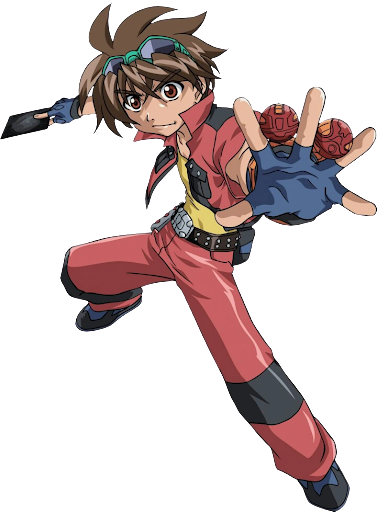

Dragonoid

Dragonoid is a dragon-like Bakugan and is usually referred to as the most powerful Bakugan.
Delta Dragonoid

The first evolution of Drago is Delta Dragonoid. He has three sleek horns and a hard plated armor in ball mode with chrome rings. He has an extra set of wings and a pitchfork tail. He possesses a strong bond with Dan and is his guardian.
Ultimate Dragonoid

Drago evolved into Ultimate Dragonoid after he fought Storm Skyress as Delta Dragonoid, due to Storm Skyress being the Guardian Bakugan of Shun, the last Brawler Dan needed to defeat. He has markings on his wings which are now split and he also has two horns that are merged.
Infinity Dragonoid

After he absorbed both cores, Drago became complete by evolving into Perfect Dragonoid. After this, he said farewell to Dan and opens up a Dimension Tunnel to the core of Vestroia. He then returned both of the cores, creating New Vestroia and becoming the Perfect Core.
Neo Dragonoid

Famous for being one of the Six Fighting Bakugan who stopped the destruction of Vestroia and resurrected New Vestroia, Neo Dragonoid reunites with Dan to battle the Vexos that are enslaving Bakugan. Neo Dragonoid evolved from Drago after defeating Barius and Fly Beetle with a fire tornado. He uses his gigantic wings as a shield against fire, water, and wind.
Titanium Dragonoid

Embodying the legacy and warrior skills of Dragonoid, this is the mightiest of Bakugan monsters. Titanium Dragonoid's body, legs, and wings are strengthened with titanium giving him strength and mobility. Titanium Dragonoid can unleash explosive attacks in all directions.
Helix Dragonoid

Partners with Dan of the Battle Brawlers. He has been embedded with the DNA code of the Ancient Bakugan. A realist and logical thinker who uses tactical maneuvers during battle. His lithe and now humanoid body makes aerial attacks faster and more lethal. A powerful flame is unleashed from Helix Dragonoid's mouth laying waste to foes. Puts a protective shield around its entire side of the battlefield. He is great at making strategies in battle.
Blitz Dragonoid

Blitz Dragonoid fires out laser beams from his top horn to deactivate his enemy's special abilities. His wings wrap around his body to deflect fireballs. Being one of the strongest Bakugan, he knocks out the opposition by wielding his strong forked tail. When it's time for battle, his battle cry is heard from miles away.
Lumino Dragonoid

Lumino Dragonoid partners with Dan in the Anime. He is a quadruple-winged evolved form of Drago and has a double bladed tail. Protecting his chest is a super strong v-neck armored plate, Lumino Dragonoid unleashes a powerful flame from his mouth and double charges it into a fearsome fireball.
Cross Dragonoid

Cross Dragonoid is a Bakugan and the evolution of Neo Dragonoid, after Apollonir gave to him his Pyrus attribute energy. He was Dan Kuso's Guardian Bakugan before he evolved into Helix Dragonoid.
AeroBlitz Dragonoid

Aeroblitz is a Bakugan made up of two Baku Sky Raiders, Reptak and Fusion Dragonoid. A very fast fusion is a terrible enemy for anyone who opposes him.
Dan Kuso
Daniel Kuso is the main protagonist of the anime series Bakugan Battle Brawlers and its three following seasons: New Vestroia, Gundalian Invaders, and Mechtanium Surge. He is partnered with a Pyrus Dragonoid named Drago.